Wonder Man (Simon Williams) (Terre-616)
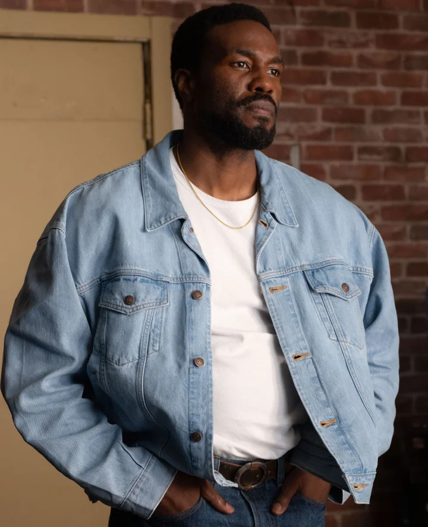
Origines :
Simon Williams est devenu, dès ses vingt ans, un homme d'affaires peu expérimenté après avoir repris la tête de l'entreprise de son père récemment décédé, Williams Innovation.
Après deux ans, il vit son commerce décliner face à la concurrence de Stark Entreprises, et demanda de l'aide et des conseils à son frère aîné Eric, qui était affilié à la pègre, et commit des fraudes fiscales sous les conseils de ce dernier, avant d'être appréhendé.
Accusant Tony Stark de tous les malheurs qu'il subit, Simon accepta l'offre du Baron Zemo et de l'Enchanteresse, qui payèrent sa caution, pour être transformé en un surhomme quasi-indestructible dans le but de détruire les Avengers de l'intérieur.
Pour le forcer à contribuer, les criminels l'empoisonnèrent et gardèrent avec eux le seul antidote capable de le guérir.
Désormais contraint, Wonder Man se fit recruter dans l'équipe des Avengers, les piégea, mais refusa finalement de les trahir.
Il sembla mourir en héros à la fin de sa mission, mais son corps ionisé tomba en réalité dans un coma profond proche de la mort.
Iron Man copia ensuite ses schémas cérébraux dans l'espoir d'un jour pouvoir le ramener à la vie.
C'est ainsi que naquit la Vision, synthézoïde créé par Ultron à partir des schémas cérébraux de Williams.
Peu après sa mort, l'équipe fit attaquée par le Moissonneur, en réalité Eric Williams, qui souhaitait venger son frère.
Il attaqua les héros à plusieurs reprises avant de voler le corps de son frère, qui était conservé dans une cuve de stase.
Désormais obsédé par l'idée de réanimer son frère, le Moissonneur l'emmena en Nouvelle-Orléans en espérant recevoir l'aide de sorciers vaudous.
Menés par Black Talon, les sorciers utilisèrent un rituel qui ramena Wonder Man et un fit un zombie.
Déçu du résultat, Eric s'arrangea pour que son frère pense que Vision avait volé son esprit.
Il l'enferma ensuite dans une caisse et l'expédia chez les Avengers.
Une fois livré, le zombie en sortit et attaqua les héros.
Les Avengers arrêtèrent Wonder Man et le poursuivirent à la Nouvelle-Orléans pour découvrir ce qui s'était passé.
Mais alors que le zombie fut exposé aux pouvoirs du Laser Vivant, il se libéra de la magie vaudou ainsi que de l'empoisonnement de Zemo.
Il mit ensuite plusieurs jours à retrouver sa volonté et le contrôle de ses mouvements.
C'est ainsi que les Avengers découvrirent qu'il n'était pas réellement mort, mais simplement plongé dans le coma pendant que son corps s'était transformé en énergie ionique solide.
A son réveil, Simon souffrit psychologiquement des souvenirs de sa « mort », et vécut pendant plusieurs mois au Manoir des Avengers tout en aidant l'équipe.
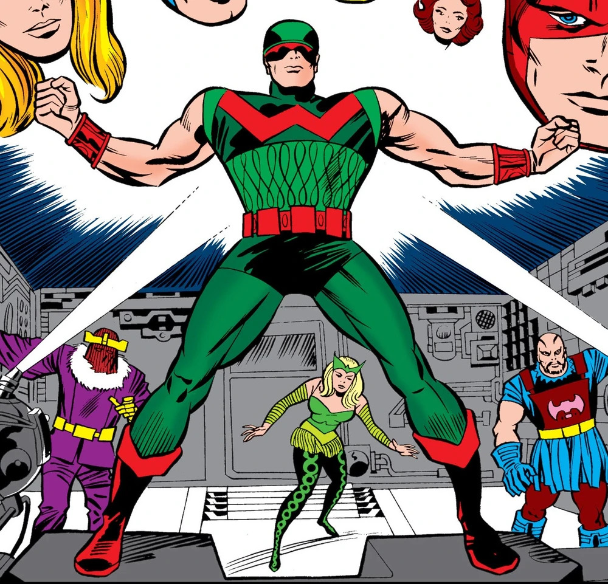
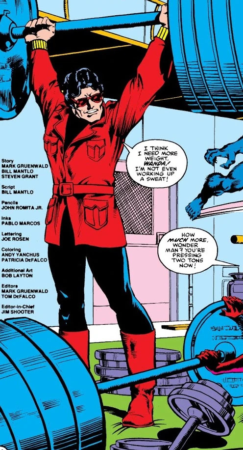
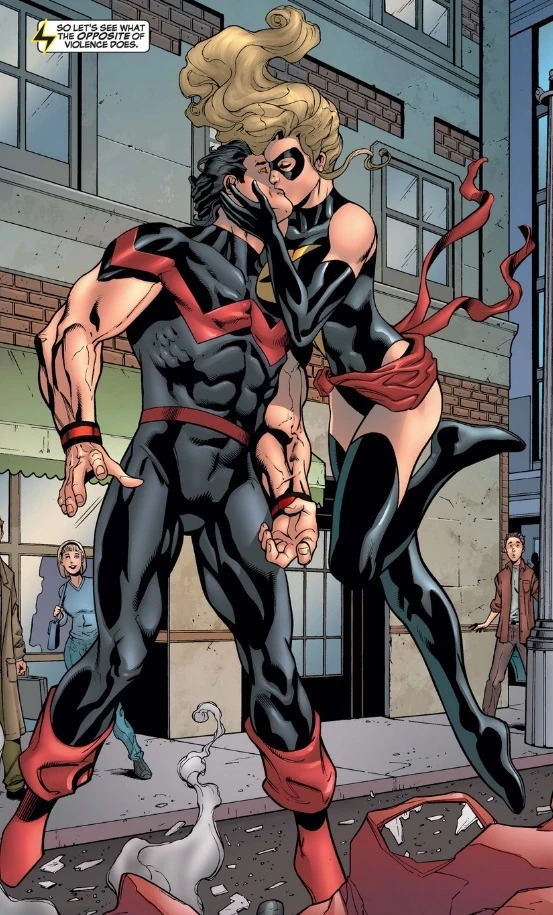
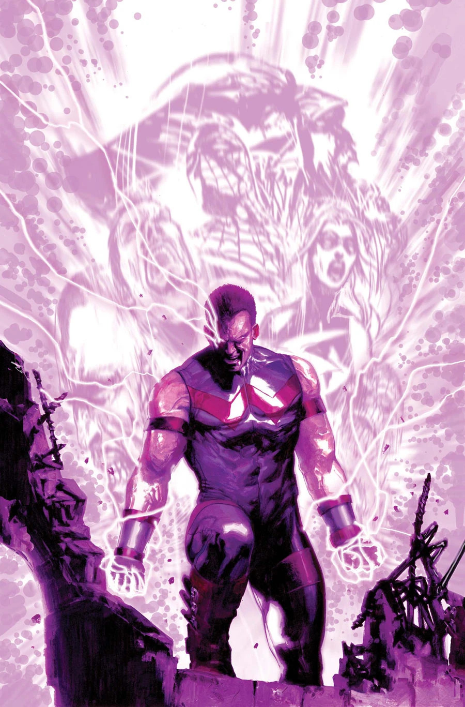
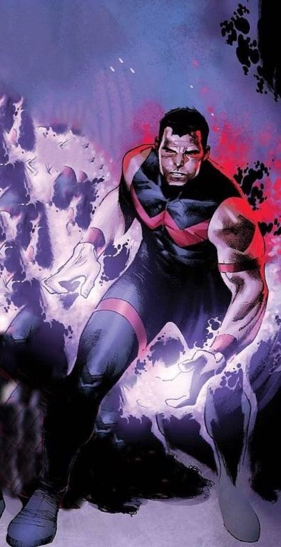
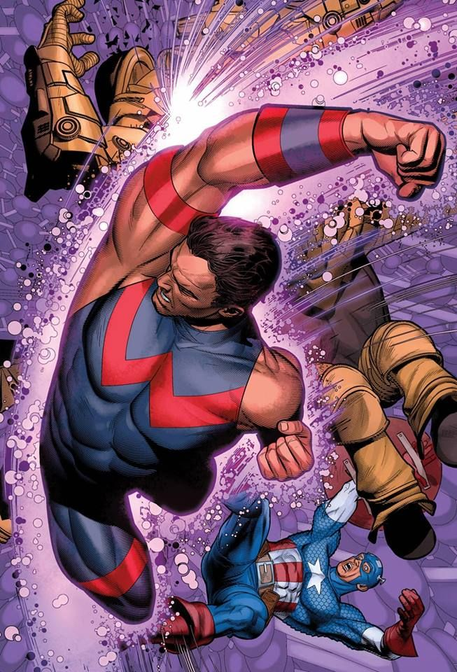
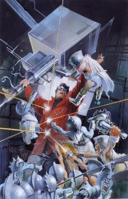
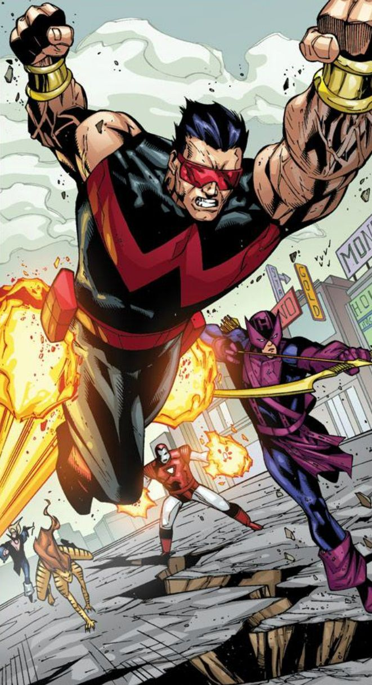
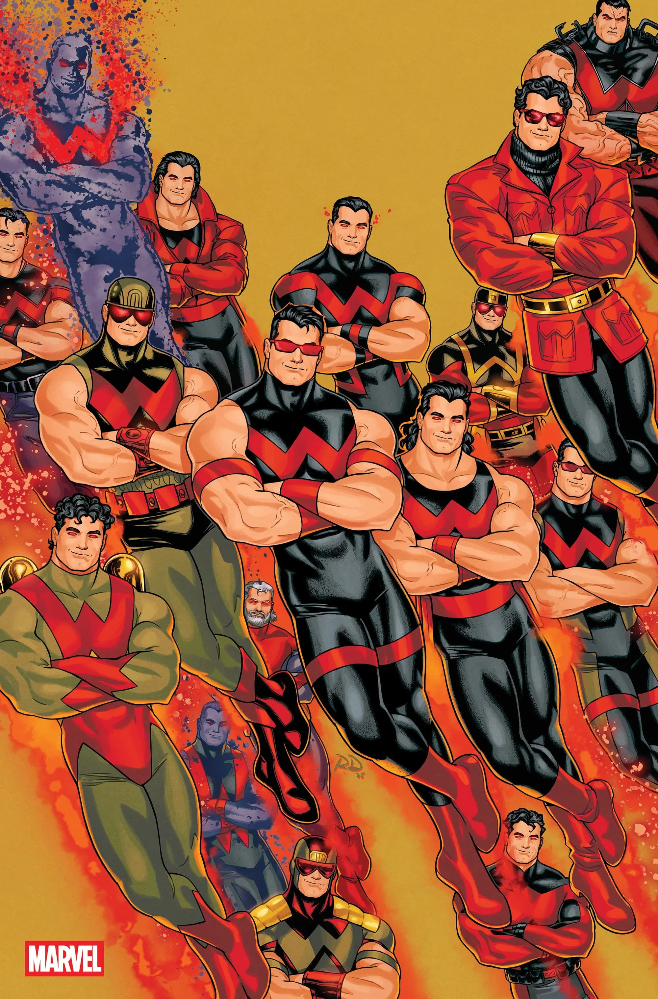
Personnalité :
Simon Williams est un homme courageux, généreux et profondément humain.
Il possède un fort sens de la justice et souhaite utiliser ses capacités pour protéger les innocents.
Cependant, Williams reste un homme sensible et sujet au doute, marqué par ses nombreuses « morts » et résurrections.
Il possède un tempérament idéaliste et loyal, et est profondément attaché à ses amis, n'hésitant pas à prendre des risques pour les protéger.
Capacités :
Simon Williams a acquis ses pouvoirs grâce aux traitements chimiques et radiologiques à l'énergie ionique infligés par le Baron Zemo.
Ces expériences lui ont conféré une force, une vitesse, une endurance, une durabilité, une agilité et des réflexes surhumains.
Les objectifs initiaux de Zemo étaient de faire de lui au moins « l'égal d'un Avenger », mais ses traitements dépassent largement ses attentes, dotant Wonder Man d'une force comparable à celle de Thor.
Wonder Man est un être composé d'énergie ionique solidifiée. Il se fatigue beaucoup moins rapidement qu'un être humain normal, de courir à une vitesse d'au moins 80km/h, ou de sauter sur de très larges distances (environ 5km en un seul saut).
Sa peau et ses tissus sont assez résistants pour supporter des températures extrêmes, allant du froid glacial du vide spatial à la chaleur d'une explosion atomique.
En tant qu'être d'énergie, il n'a pas besoin de dormir, de respirer ni de se nourrir.
Sa vision s'étend légèrement dans le spectre infrarouge, lui permettant de voir dans le noir le plus complet sans source de lumière.
Il est virtuellement immortel, car même dispersée, l'énergie constituant son corps peur se reconstituer, et il a arrêté de vieillir.
Il peut également utiliser son énergie ionique pour voler dans les airs à une vitesse modérée.

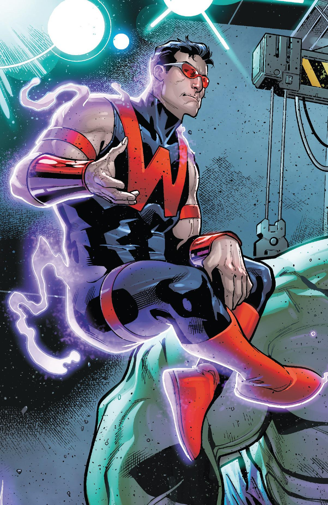
Costume :
Wonder Man est un homme grand, à la musculature particulièrement développée et à la carrure imposante.
Il possède des cheveux noirs, souvent coiffés vers l'arrière.
Le costume de Wonder Man est composé d'une combinaison noire, remplaçant les couleurs vives de ses premières apparitions, avec les bras largement découverts.
Il porte son emblème rouge en forme de W sur le torse, et est souvent accompagné des ses lunettes caractéristiques teintées rouge, renforçant son allure de vedette hollywoodienne.
Son corps est composé d'énergie ionique solidifiée, ses yeux ne possèdent plus de pupilles ou d'iris, et sont imprégnés de particules d'énergie ionique, les faisant luire d'une couleur rouge.
Les principaux ennemis de Wonder Man
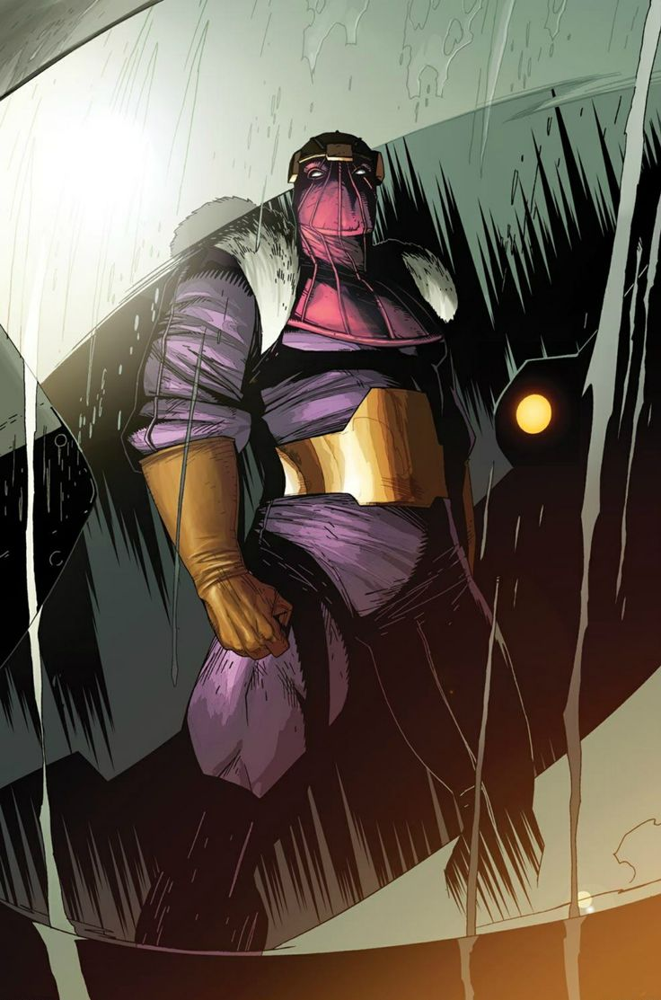
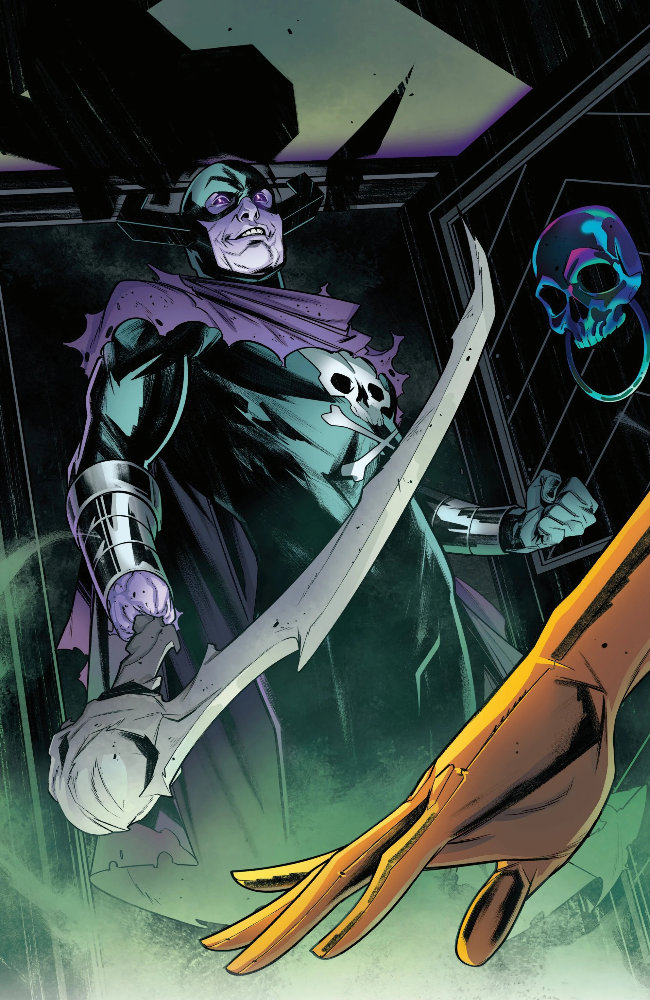
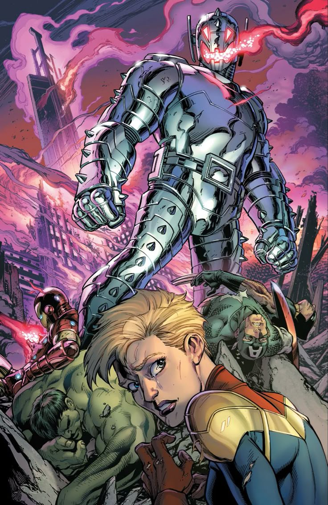

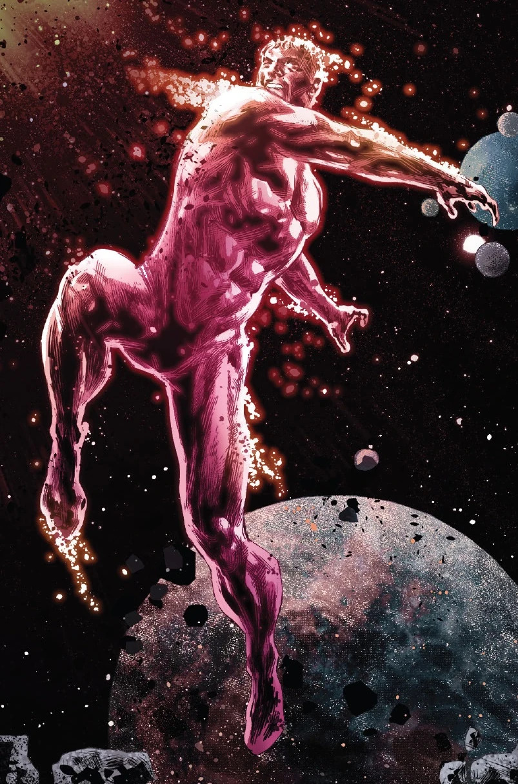
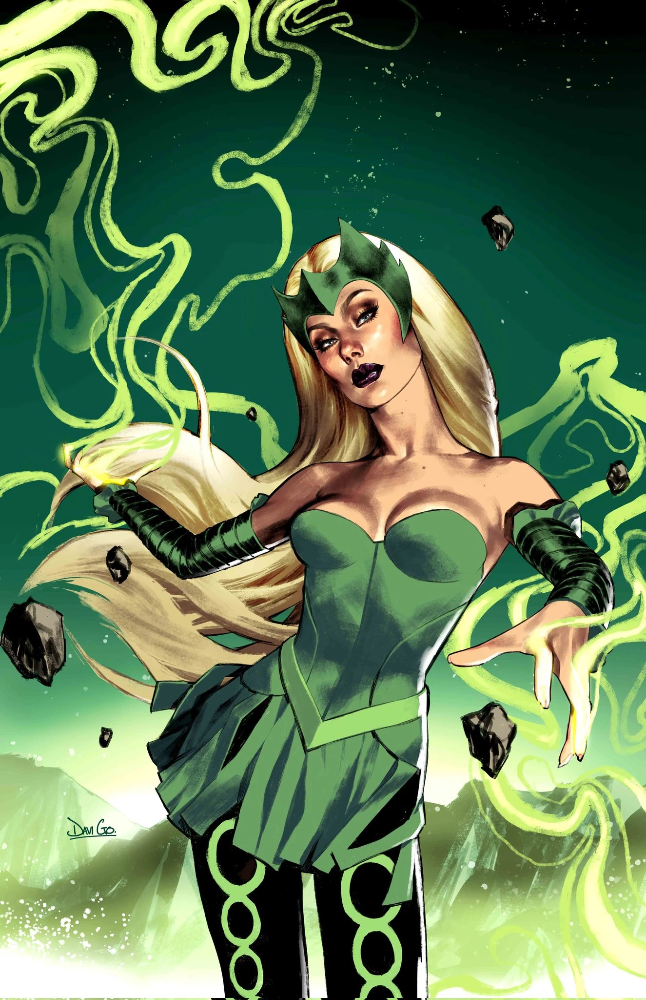
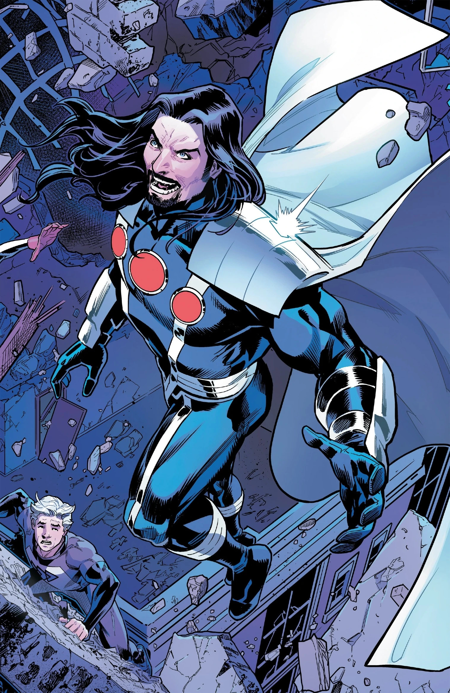
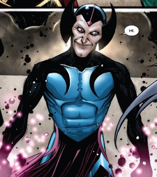
Équipes affiliées